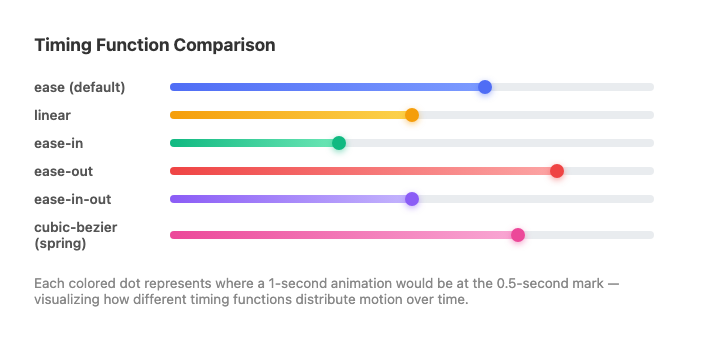
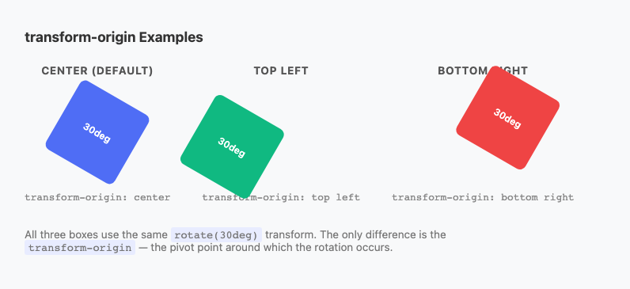
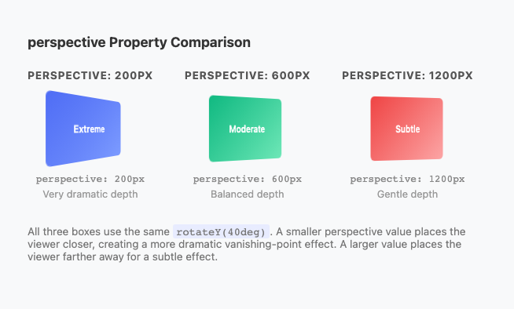

CSS Transitions &
Transforms
Motion that guides attention, communicates state, and makes interfaces feel alive.
The Evolution of Web Animation
- Flash (2000s) — frame-by-frame motion graphics. Fell from favor due to security issues and no mobile support.
- jQuery.animate() — JavaScript nudged property values 60×/sec via
setInterval. Ran on the browser's main thread. Under load it caused jank — choppy or frozen animations. - CSS Transitions & Transforms — work is handed to the browser's compositor and GPU. Smooth 60fps without touching the main thread at all.
-webkit-transform, -moz-transform, -ms-transform. You do not need these for new projects — write the unprefixed standard property and move on.
/* You may see this in OLD code — do not copy */
-webkit-transform: rotate(45deg);
-moz-transform: rotate(45deg);
-ms-transform: rotate(45deg);
transform: rotate(45deg); /* ← just this */| Era | Problem |
|---|---|
| Flash | Plugin required; no mobile |
| JS animation | Main thread; jank under load |
| CSS transitions | GPU compositor; smooth 60fps |
What is a CSS Transition?
A transition watches a CSS property for changes. When the property changes — hover, class toggle, focus — the browser animates smoothly from the old value to the new one instead of snapping instantly.
/* Without transition — instant */
button {
background-color: #4f6df5;
}
button:hover {
background-color: #e74c3c; /* SNAP */
}
/* With transition — animated */
button {
background-color: #4f6df5;
transition: background-color 0.3s ease;
}
button:hover {
background-color: #e74c3c; /* SMOOTH */
}Hover the boxes to compare:
Instant snap
Smooth animation
transition: background .4s ease, transform .3s ease-out;
The Four Transition Sub-Properties
button {
background-color: #4f6df5;
/* WHAT to watch */
transition-property: background-color, transform;
/* HOW LONG */
transition-duration: 0.2s;
/* THE PACE */
transition-timing-function: ease-out;
/* WAIT BEFORE STARTING */
transition-delay: 0s;
}
button:hover {
background-color: #3a56d4;
transform: translateY(-2px);
}| Property | What it controls |
|---|---|
| transition-property | Which CSS property to animate (all, opacity, transform, etc.) |
| transition-duration | How long the animation takes (0.3s = 300ms) |
| transition-timing-function | The pace curve (ease, linear, cubic-bezier…) |
| transition-delay | Wait time before animation starts — useful for stagger effects |

The Shorthand & The Key Rule
/* Single property */
button {
transition: background-color 0.2s ease-out;
}
/* Multiple — comma-separated */
button {
transition: background-color 0.2s ease-out,
transform 0.15s ease-out;
}
/* All (use with caution) */
button {
transition: all 0.2s ease-out;
}transition: all in production — it watches every property, including ones you don't want to animate. Name them explicitly.
:hover.This makes it animate both entering and leaving the hover state.
Hover both buttons to see the difference:
Animates in AND out
Animates in, snaps back
property duration timing delay
Timing Functions: Built-in Keywords
| Value | Feel | Best for |
|---|---|---|
| ease | Slow start → fast → slow end | Default; most UI interactions |
| ease-out | Fast start → slow end | Hover effects; elements "landing" |
| ease-in | Slow start → fast end | Elements leaving the screen |
| ease-in-out | Slow → fast → slow | Longer, across-screen motion |
| linear | Constant speed | Spinning loaders; looping animations |

All five keyword values as cubic-bezier curves — visualized as speed over time.
Custom Curves: cubic-bezier(), steps(), linear()
/* All keywords are cubic-bezier shortcuts */
/* ease = */ cubic-bezier(0.25, 0.1, 0.25, 1.0)
/* Springy overshoot — bounces past target */
cubic-bezier(0.34, 1.56, 0.64, 1)
/* Sharp deceleration (snappy landing) */
cubic-bezier(0.22, 1, 0.36, 1)
/* steps() — discrete jumps, no smooth interpolation */
transition: background-position 0.8s steps(8);
/* linear() — piecewise spring (2023+) */
.spring {
transition: transform 0.6s linear(
0, 0.5, 1.05, 0.95, 1.02, 0.98, 1
);
}
cubic-bezier.com — drag control points to craft a curve

linear-easing-generator.netlify.app — generate spring physics as linear()
What Can (and Cannot) Be Transitioned
✅ Can transition (numeric/color values)
opacity— 0 to 1 (GPU-accelerated)transform— all functions (GPU-accelerated)background-color,color,border-colorbox-shadow,text-shadowwidth,height,padding,marginfont-size,border-radius,max-height
❌ Cannot smoothly transition (discrete values)
display— none / block / flex (no interpolation)font-family— no middle value between fontsposition— static / relative / absolutevisibility— partially supported
width, height, margin, padding) — they trigger browser layout recalculation on every frame. Prefer transform and opacity.
Animating display: none — The Modern Solution
The long-standing problem: you couldn't transition into or out of display: none. Now solved with two 2023 features.
.dialog {
display: none;
opacity: 0;
transform: translateY(12px);
/* transition-behavior: allow-discrete
tells the browser to include display
in the transition sequence */
transition: opacity 0.3s ease,
transform 0.3s ease,
display 0.3s allow-discrete;
}
.dialog.is-open {
display: block;
opacity: 1;
transform: translateY(0);
}
/* @starting-style defines the "from" values
when the element first becomes visible */
@starting-style {
.dialog.is-open {
opacity: 0;
transform: translateY(12px);
}
}transition-behavior: allow-discrete— includesdisplayin the transition. The "off" value is held until the exit animation finishes.@starting-style— defines values the element transitions FROM when it first appears. Without it, entry has no animation.
visibility: hidden + pointer-events: none + opacity: 0 — or JS libraries like GSAP.
GPU-Accelerated Properties
The Two GPU-Safe Properties
transform— Moving, rotating, scaling, skewing never triggers layout or paint. The element is promoted to a compositor layer; the GPU handles interpolation.opacity— Fading is also compositor-only.
transform: translateX(100px) over left: 100px. Prefer opacity over toggling visibility. The visual result looks the same — the browser work is dramatically different.
Hover both boxes — both move identically, but one triggers full page reflow on every frame:
left: triggers layout
transform: GPU only

Animating layout properties (left, width, height) forces the browser through all three pipeline stages. transform and opacity skip directly to compositing.
will-change & prefers-reduced-motion
will-change
/* Hints browser to prep a compositor layer in advance */
.card {
will-change: transform;
}
.card:hover {
transform: scale(1.03);
transition: transform 0.2s ease-out;
}will-change declaration consumes GPU memory. Do not apply to large numbers of elements. Prefer adding it with JS just before animation starts, then removing it after.
prefers-reduced-motion
/* Default: animated */
.button {
transition: transform 0.2s ease-out,
box-shadow 0.2s ease-out;
}
.button:hover {
transform: translateY(-3px);
}
/* Reduced motion: instant change */
@media (prefers-reduced-motion: reduce) {
.button {
transition: none;
}
}prefers-reduced-motion
2D Transforms: translate() & rotate()
transform visually repositions/reshapes an element without affecting document flow — other elements don't shift to accommodate it.
translate() — Move
/* Move 50px right, 20px down */
transform: translate(50px, 20px);
/* Single axis shortcuts */
transform: translateX(50px);
transform: translateY(-20px); /* UP */
/* % = relative to element's own size */
transform: translateX(100%); /* = element width */rotate() — Spin
transform: rotate(45deg); /* clockwise */
transform: rotate(-90deg); /* counter-clockwise */
transform: rotate(0.25turn); /* quarter turn */
transform: rotate(1turn); /* full spin */scale(), skew() & Combining Transforms
scale() — Resize from center
transform: scale(1.2); /* 20% larger */
transform: scale(1.5, 0.8); /* wider & shorter */
transform: scaleX(2); /* double width only */
transform: scale(0); /* shrink to nothing */skew() — Shear/Slant
transform: skewX(15deg); /* slant left-to-right */
transform: skewY(5deg); /* slant top-to-bottom */
transform: skew(15deg, 5deg); /* both axes */Combining — order matters!
/* Applied right-to-left */
/* translate first, then rotate */
transform: translateX(100px) rotate(45deg);
/* rotate first, then translate along rotated axis */
transform: rotate(45deg) translateX(100px);
/* Practical hover effect */
.card:hover {
transform: translateY(-8px) scale(1.02) rotate(-1deg);
}rotate(45deg) translateX(100px) translates along the rotated axis — very different from the reverse order.
transform-origin, Centering Trick & Modern Syntax
transform-origin — change the pivot
/* Default: center center */
transform-origin: top left; /* page-turn effect */
transform-origin: bottom center; /* grow upward */
transform-origin: 0 50%; /* left edge, centered */
Same rotate(45deg) — three different origins produce three very different results.
Centering trick with translate
.centered {
position: absolute;
top: 50%;
left: 50%;
/* top-left corner is now at center;
shift back by 50% of own size */
transform: translate(-50%, -50%);
}Modern individual properties (2022+)
.card {
translate: 0 0;
scale: 1;
rotate: 0deg;
/* Transition each independently */
transition: translate 0.2s ease-out,
scale 0.15s ease-out;
}
.card:hover {
translate: 0 -8px;
scale: 1.02;
}transform.3D Transforms: Perspective & Rotation
perspective — set on the PARENT
/* Small value = dramatic depth effect */
.scene { perspective: 200px; }
/* Typical UI range: 600–1000px */
.scene { perspective: 800px; }
/* Large value = subtle perspective */
.scene { perspective: 1200px; }
.card {
transform: rotateY(30deg); /* now has depth */
}perspective goes on the parent element (the "scene"), not on the element being transformed. This establishes the viewer's distance from the z=0 plane.

Same rotateY(45deg) — dramatic difference in perceived depth with different perspective values.
3D Rotation Functions
/* Tilt top toward viewer (nod) */
transform: rotateX(45deg);
/* Spin left-right (shake head) */
transform: rotateY(180deg);
/* Same as 2D rotate() */
transform: rotateZ(45deg);
/* Move toward/away on Z axis */
transform: translateZ(100px);
transform: translateZ(-100px);transform-style: preserve-3d & backface-visibility
/* The scene provides perspective */
.scene {
perspective: 800px;
width: 300px;
height: 200px;
}
/* The card flips — MUST have preserve-3d
so children exist in 3D space */
.card {
width: 100%;
height: 100%;
position: relative;
transform-style: preserve-3d;
transition: transform 0.6s ease-in-out;
}
.scene:hover .card {
transform: rotateY(180deg);
}
/* Both faces fill the card absolutely */
.card__face {
position: absolute;
width: 100%;
height: 100%;
backface-visibility: hidden; /* hide when facing away */
}
/* Back face starts pre-rotated */
.card__face--back {
transform: rotateY(180deg);
}How it works:
transform-style: preserve-3don the card container — keeps children in 3D space. Without it, children are "flattened" to the parent's 2D plane.backface-visibility: hiddenon both faces — makes each face invisible when its back is toward the viewer.- Back face starts at
rotateY(180deg)— so it faces away from the viewer by default and only becomes visible after a flip.
overflow: hidden, clip-path, filter, or mix-blend-mode on an ancestor element will break preserve-3d and flatten the 3D context.
Transitions + Transforms in Practice
Button Lift
.btn {
transform: translateY(0);
box-shadow: 0 2px 6px rgba(0,0,0,.12);
transition:
transform .15s ease-out,
box-shadow .15s ease-out;
}
.btn:hover {
transform: translateY(-3px);
box-shadow: 0 8px 20px rgba(0,0,0,.18);
}
.btn:active {
transform: translateY(-1px);
}Image Zoom
.image-wrapper {
overflow: hidden; /* clips zoom */
border-radius: 8px;
}
.image-wrapper img {
width: 100%;
display: block;
transform: scale(1);
transition: transform .4s ease-out;
}
.image-wrapper:hover img {
transform: scale(1.08);
}Fade + Slide In
.panel {
opacity: 0;
transform: translateY(12px);
transition:
opacity .3s ease,
transform .3s ease;
}
.panel.is-visible {
opacity: 1;
transform: translateY(0);
}
@media (prefers-reduced-motion: reduce) {
.panel { transition: none; }
}:hover or a toggled class. CSS handles the smooth interpolation automatically.
Summary
property, duration, timing-function, delay. Put the transition on the default state, not :hover.
ease-out for most hover effects. cubic-bezier() for custom curves. linear() for spring physics (2023+).
transform and opacity are compositor-only. All other properties trigger layout/paint. Use sparingly — avoid transition: all.
translate, rotate, scale, skew never affect document flow. Order matters when combining. Modern: use individual translate/rotate/scale properties.
perspective on the parent. transform-style: preserve-3d on the container. backface-visibility: hidden on both faces. Back face pre-rotated 180°.
@media (prefers-reduced-motion: reduce). Functional transitions (state change) = OK. Decorative parallax/fly-ins = disable.
@starting-style + transition-behavior: allow-discrete for enter/exit animations. Chrome 117+, Firefox 129+, Safari 17.5+.
Common Questions
- What's the difference between
left: 100pxandtransform: translateX(100px)? They look the same. - They look identical, but the browser work is very different. Animating
leftrequires layout recalculation on every frame.transform: translateX()is handled by the GPU compositor — it just moves a pre-composited layer. On a complex page, this is the difference between smooth 60fps motion and visible jank. - Should I always use
transition: allto keep CSS simple? - Avoid it in production.
transition: allmonitors every property — including ones you didn't intend to animate. If a CSS variable changes during a theme switch, it will animate unexpectedly. Always name your properties:transition: transform 0.2s ease-out, opacity 0.2s ease-out. - The card flip shows the front face through the back. What's wrong?
- Almost always: missing
transform-style: preserve-3don the card container, or missingbackface-visibility: hiddenon the faces. Also check that no ancestor hasoverflow: hidden,filter,clip-path, ormix-blend-mode— these break the 3D context. - How do I animate an element only in one direction — in on hover, but snap back instantly?
- Put the transition on the
:hoverrule instead of the default state. When hover ends, the:hoverstyles (including the transition) are removed, so the return snaps instantly. Use sparingly — two-way transitions usually feel more polished. - I want an animation to play on page load, not just on hover. Can transitions do that?
- Transitions need a property change (before/after). Classic approach: JS sets initial state in CSS, then
setTimeoutadds a class to trigger the transition. Modern approach: use@starting-style— define starting values, and the browser auto-transitions from them when the element first renders. Supported in all current browsers since 2024.